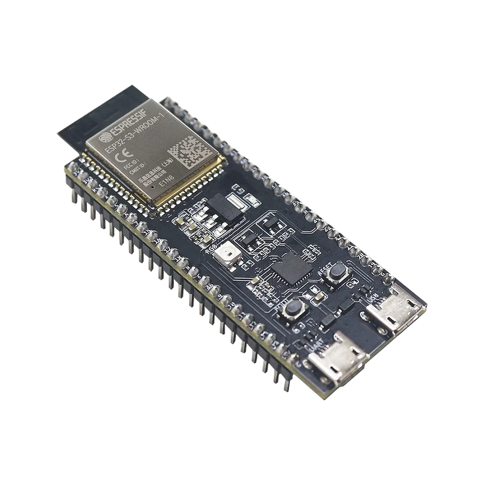

generic GPIO bench
ESP32-S3 DevKit for Bit Pirate hardware debugging
Use a generic ESP32-S3 DevKit when exposed GPIO, breadboard wiring and adapter flexibility matter more than a handheld screen. It is the clearest starting point for SPI, I2C, UART, GPIO and adapter experiments because the headers are easy to wire and document.

Board-specific guide for ESP32-S3 DevKit firmware, exposed GPIO wiring, USB workflows and general-purpose hardware debugging.
compatibility
ESP32-S3 DevKit board overview
Use this page to judge ESP32-S3 DevKit for clean bench wiring, Dock use and repeatable ESP32 Bit Pirate protocol tests.
practical tasks
ESP32-S3 DevKit supported workflows
ESP32-S3 DevKit is the broad bench choice for SPI, I2C, UART, GPIO and adapter workflows that need clear headers and repeatable wiring.
Use accessible pins with pullups or the Dock adapter path for sensors and EEPROMs.
Practical for chip clips and adapter boards because SPI signals and power can be routed deliberately.
Use as a USB-connected serial console for boot logs, AT modems and embedded devices.
The strongest board choice for pin pulsing, frequency checks and unknown-pin workflows.
ESP32-S3 DevKit pin mapping and wiring notes
Use the firmware DevKit pin mapping as the source of truth before connecting a target. The generic DevKit firmware can run on other ESP32-S3 boards with enough flash, but connector layout and safe pins may differ. If your board is an N16R8 variant, select the N16R8 firmware rather than guessing.
Always verify voltage and pin mapping before connecting a target. The ESP32-S3 side is not 5 V tolerant unless external level shifting or the Dock path is used correctly.
useful pages
ESP32-S3 DevKit useful next pages
Jump from ESP32-S3 DevKit to broad protocol, recipe, module and hardware pages for bench wiring.
Protocol modes
Open the protocol overview before choosing pins and commands.
SPIOpen the protocol overview before choosing pins and commands.
UARTOpen the protocol overview before choosing pins and commands.
DIO/GPIOOpen the protocol overview before choosing pins and commands.
USB adaptersOpen the protocol overview before choosing pins and commands.
Useful recipes
Use the task guide for wiring, commands and troubleshooting.
Dump SPI flash in browserUse the task guide for wiring, commands and troubleshooting.
Run I2C health diagnosticsUse the task guide for wiring, commands and troubleshooting.
Use Logic Analyzer PulseviewUse the task guide for wiring, commands and troubleshooting.
Wire MCP2515 CAN moduleUse the task guide for wiring, commands and troubleshooting.
Tools and hardware
Open this ESP32-S3 DevKit resource for the matching flashing, serial, hardware or module path.
Logic AnalyzerOpen this ESP32-S3 DevKit resource for the matching flashing, serial, hardware or module path.
Web Serial TerminalOpen Web Serial for ESP32-S3 DevKit CLI sessions after flashing.
Hardware ecosystemCheck docks, adapters and wiring hardware that pair with ESP32-S3 DevKit.
Modules and target chipsBrowse chips and breakout modules that make sense with ESP32-S3 DevKit wiring.
board-specific answers
ESP32-S3 DevKit FAQ
Quick ESP32-S3 DevKit answers about bench wiring, Dock use, browser flashing and broad protocol coverage.
Which DevKit firmware should I flash?
Use ESP32-S3 DevKit for the standard target, or ESP32-S3 N16R8 if your board matches that memory variant.
Can I use another ESP32-S3 board?
Possibly, if it has at least 8 MB of flash, but the generic pin mapping may not match your headers.
Is this the best board for the Dock?
Yes. The hardware page describes the Dock around an ESP32-S3-DevKitC-1 style carrier footprint.
Why choose DevKit instead of Cardputer?
Choose DevKit when exposed GPIO, wiring freedom and adapter use matter more than screen, keyboard or battery.
Is it good for SPI flash dumps?
Yes. It is the clearest board choice for SPI clips, flash adapters and browser SPI flash workflows.

source project
ESP32-S3 DevKit in the ESP32 Bit Pirate ecosystem
ESP32 Bit Pirate on ESP32-S3 DevKit is the clean bench option for labeled headers, Dock wiring, repeatable GPIO access and broad protocol testing.